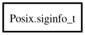

Posix.siginfo_t – posix Reference Manual
siginfo_t
Object Hierarchy:

Description:
[
CCode
( cname =
"siginfo_t"
, has_type_id =
false
) ]
public
struct
siginfo_t
Namespace:
Posix
Package:
posix
Content:
Fields:
public
int
si_signo
public
int
si_errno
public
int
si_code
public
int
si_trapno
public
pid_t
si_pid
public
uid_t
si_uid
public
int
si_status
public
clock_t
si_utime
public
clock_t
si_stime
public
sigval_t
si_value
public
int
si_int
public
void
*
si_ptr
public
int
si_overrun
public
int
si_timerid
public
void
*
si_addr
public
long
si_band
public
int
si_fd
public
short
si_addr_lsb